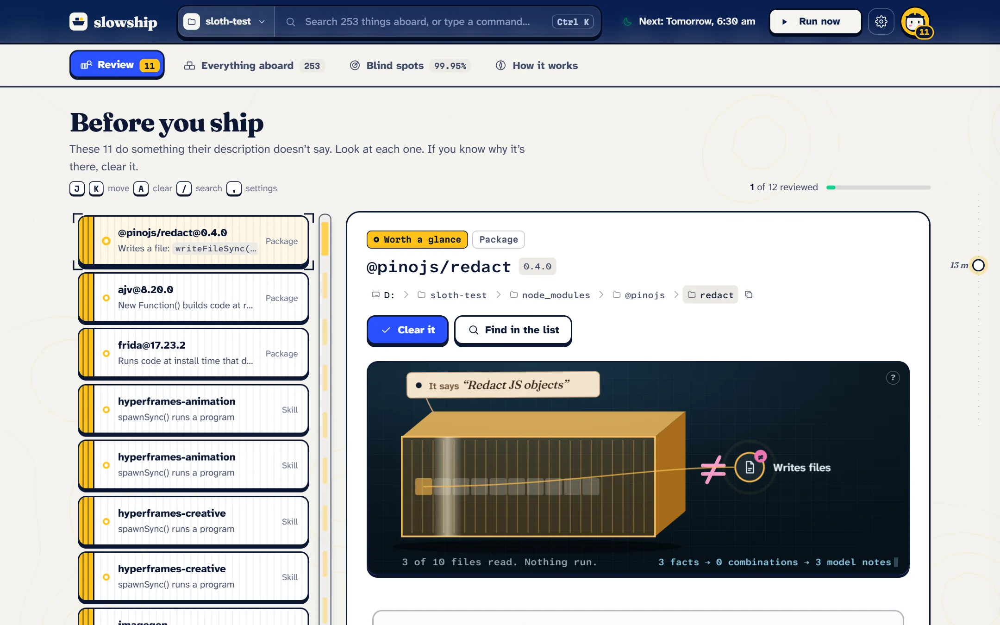
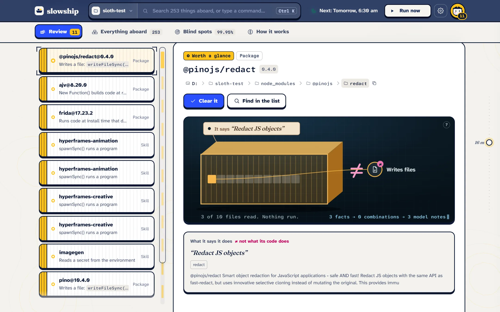
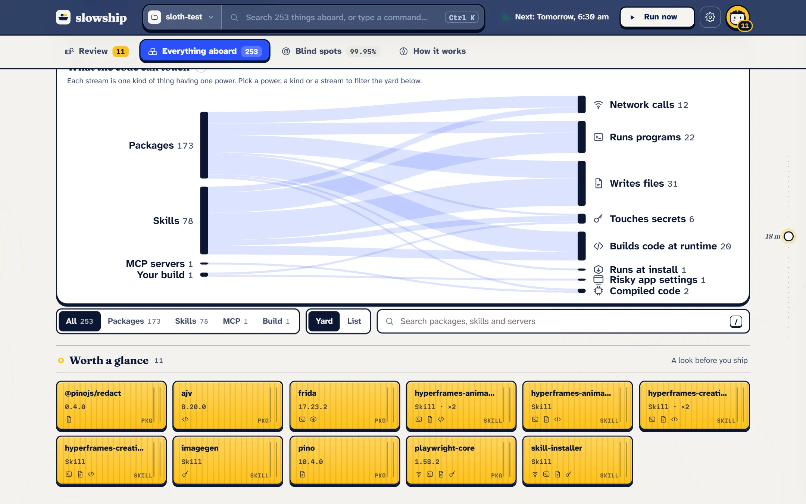
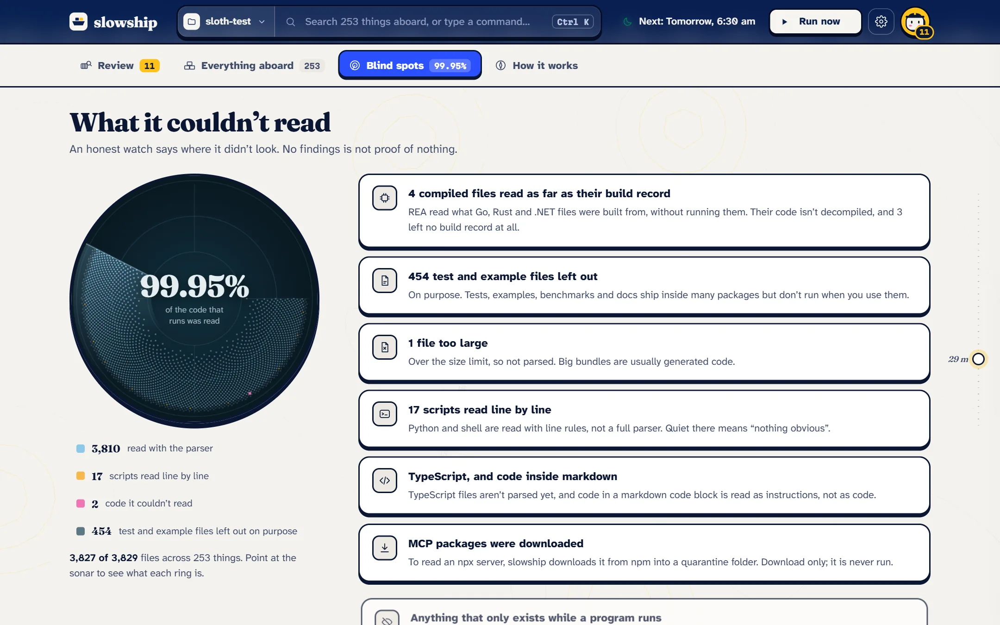
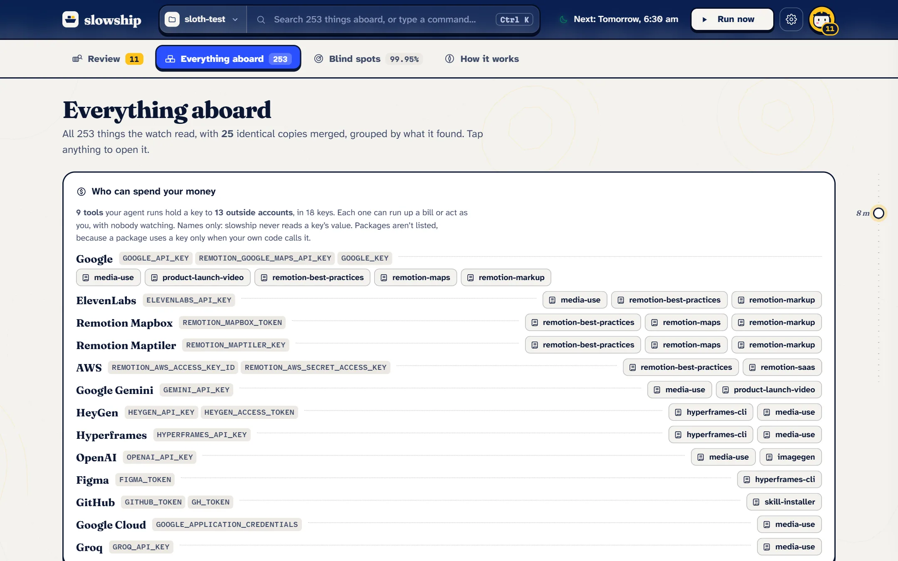
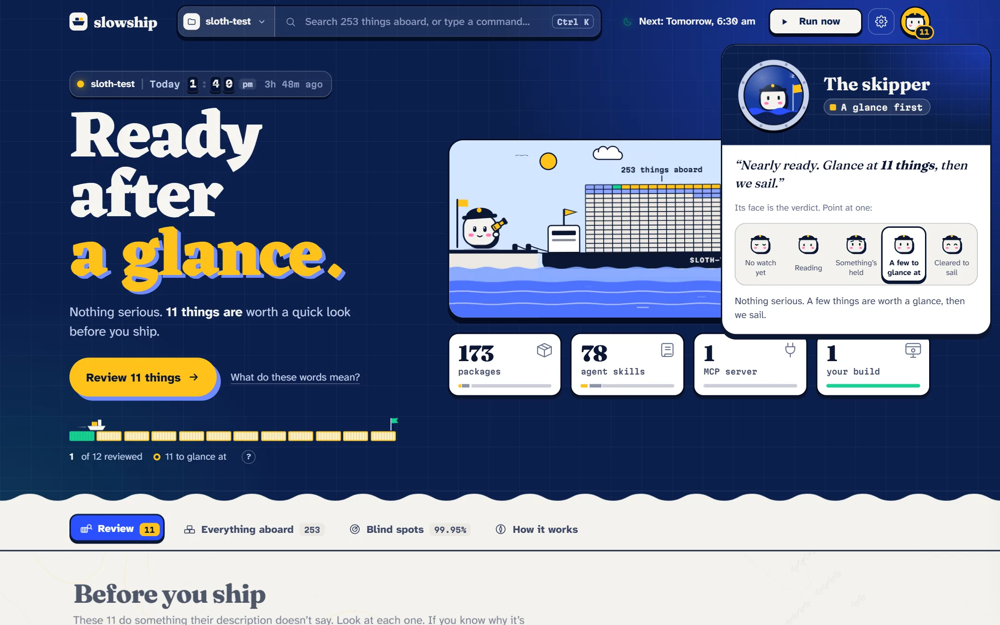
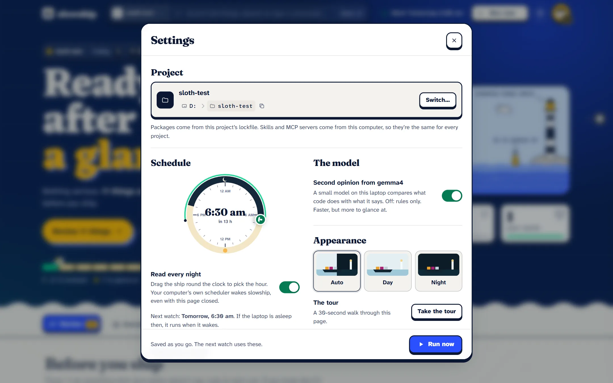
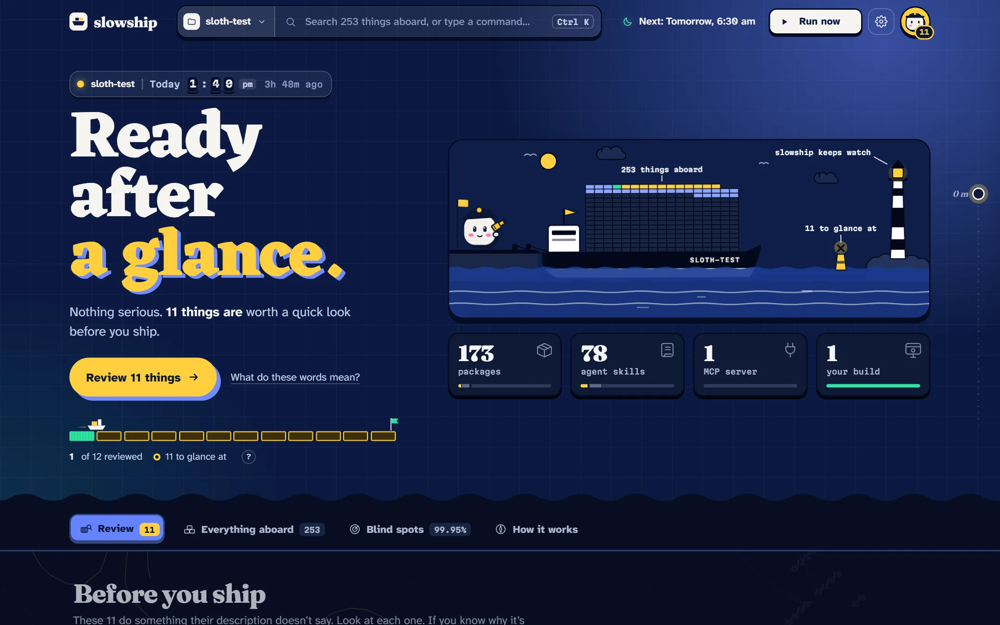

Using it
The morning report
The report is where you read a watch properly: the verdict, a short queue of what needs you, and the real code behind every finding. It runs on your own computer and answers nothing else.
#Open it
slowship uiIt opens http://127.0.0.1:7798 in your browser. Use --port to pick another port, or --no-open to start it without opening a tab. You can also press o on the verdict card, or in the terminal review.
You don’t need the report running at night. The nightly watch runs by itself and saves its results; the report only reads them when you open it.
#The verdict

At the top is the verdict in three words: held in port, ready after a glance or cleared to sail. Under it, one line says why, and one button takes you to what to do next.
Beside it, your project is drawn as a ship in harbour. Each container is one thing aboard, coloured by what was found:
| Colour | Means |
|---|---|
| Magenta | Held: does more than it says |
| Yellow | Worth a glance |
| Mint | Cleared by you |
| Grey | Noted: a power you’d expect from it, like a downloader making network calls |
| Pale | Fine |
While something is held, the ship stays moored. Once everything is clear, it sails out.
#What it read
Under the harbour, four counts say where everything came from: packages from the project’s lockfile, skills and MCP servers from this computer, and your build if you chose one. Pick one to list just those.
#The review list

The Review tab is the short list of what needs you, held things first. Pick one, and the inspector shows:
- What it says, from its own description, beside what its code does, as a list of facts.
- The real code around each finding, with the flagged line lit. Point at a fact to jump to its line.
- The model’s note, in plain words, when the model was asked.
- For your build, the IPC map: how pages reach the main process, drawn as lock gates. A handler that checks who sent the message shuts its gate. One that doesn’t lets the current run through.
- For compiled files, what they were built from: modules or crates, versions, the toolchain.

When you’ve looked, press Clear. A ship takes it aboard, it turns green, and the next one comes up. Undo puts it back. See Clearing things.
#Search and commands
Press Ctrl K (or ⌘K on a Mac) from anywhere. Type a name to find anything aboard, what needs you first. Or type what you want to do: run, settings, connect your agent.
Other keys in the report: j and k move through the queue, a clears, / searches, r runs a watch now, , opens Settings, and 1 to 4 switch tabs.
#Everything aboard

The full list, not just what needs you. Filter by kind (packages, skills, MCP servers, your build) or by a power, like makes network calls or runs programs, to see only the things that have it.
#Blind spots

An honest account of where the watch couldn’t look: MCP servers it couldn’t read, compiled files read only as far as their build record, test files left out on purpose, files too big to parse. See What it can’t see.
#Who can spend your money

Agents with paid keys can run up a bill on their own. This ledger lists every key to an outside account that your skills and MCP servers read in their code, name in their instructions, or are handed in an editor’s MCP config, grouped by account, with the tools that hold each one. Only key names are read, never their values.
#The skipper

The skipper sits in the top bar with a count of what’s waiting. Its face is the verdict at a glance: asleep before any watch, reading during one, worried when something is held, calm when a few things are worth a glance, happy when you’re cleared to sail.
Every part of the report has a ? or a hover explanation, and a short tour runs on your first visit.
#Settings

Open Settings with the gear or ,. From here you can:
- Switch project to a recent one, or browse to any folder on this computer.
- Turn on the nightly watch and pick its time.
- Choose what to read: packages, agent skills and MCP servers.
- Add your build folder.
- Turn the model off, for rules only.
- Connect a morning ping and your coding agent.
- Pick a theme: light, dark, or the same as your computer.
